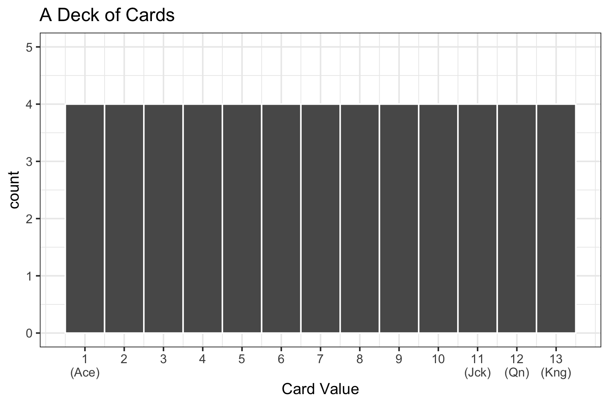
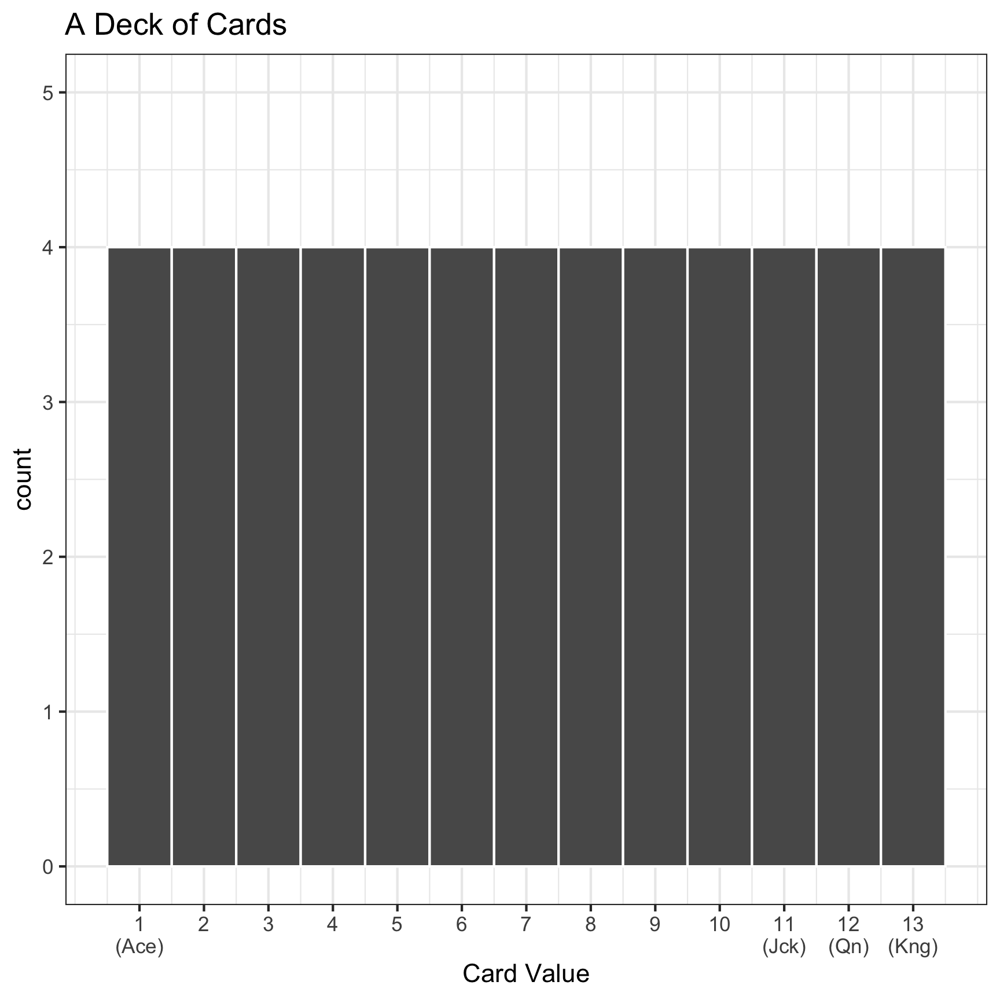
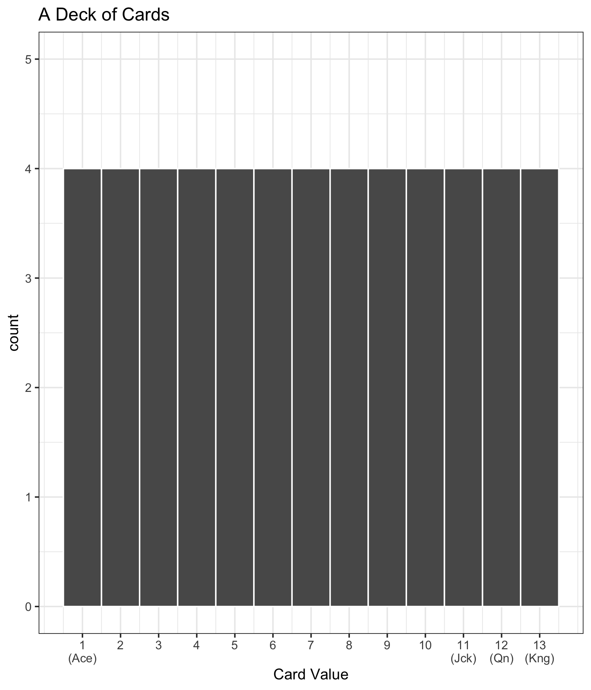
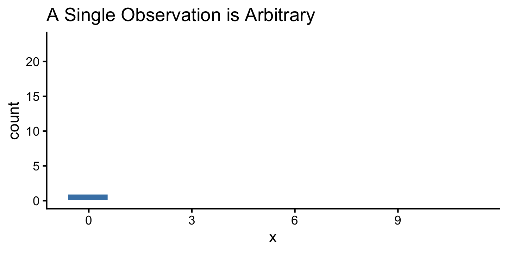
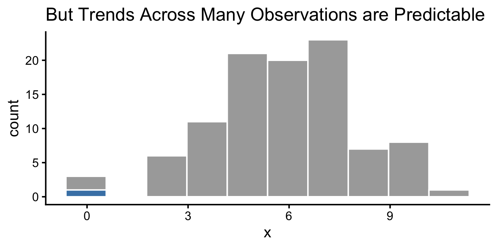
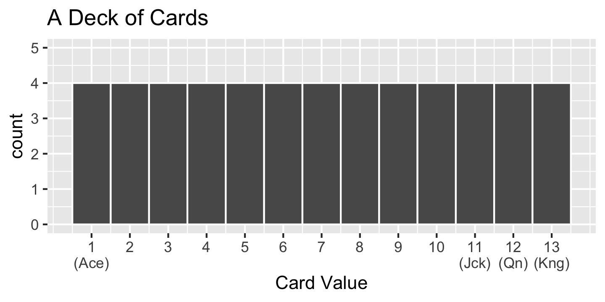
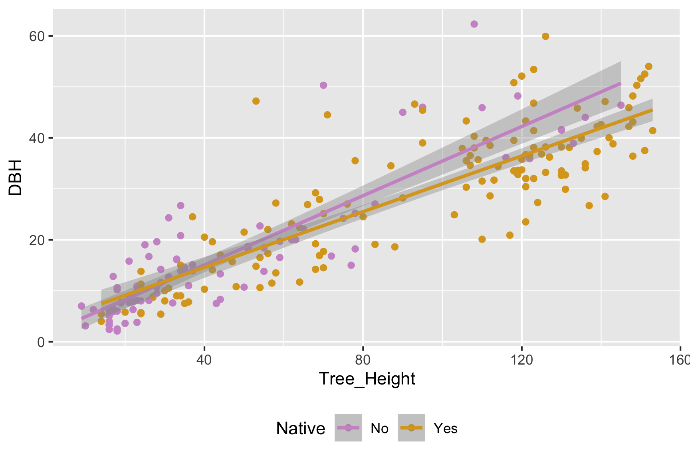
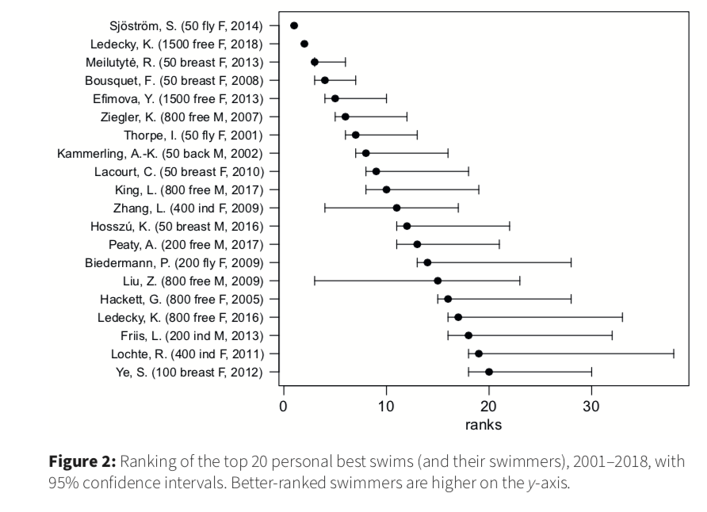

Sampling Distributions I
Megan Ayers
Stat 141 | Fall 2026
Friday, Week 5
Announcements/Reminders
- New member of the course assistant team
- Updated office hours
- HW 4 due today
- Extra time for HW 5: due Monday March 9
- Final exam slots finalized
- Reminder to pick up your learning assessment for feedback
Goals for Today
Start learning the foundations of inference
Perform a group sampling activity
Discuss random sampling: the heart of statistics!
Distinguishing between the population and the sample
\[ y = \beta_0 + \beta_1 x_1 + \beta_2x_2 + \ldots + \beta_p x_p + \epsilon \]
- Parameters:
- Based on the population
- Unknown then if don’t have data on the whole population
- EX: \(\beta_0\), \(\beta_1\), \(\ldots\), \(\beta_p\)
\[ \widehat{y} = \widehat{ \beta}_0 + \widehat{\beta}_1 x_1 + \widehat{\beta}_2 x_2 + \ldots + \widehat{\beta}_p x_p \]
- Statistics:
- Based on the sample data
- Known
- Usually estimate a population parameter
- EX: \(\widehat{\beta}_0\), \(\widehat{\beta}_1\), \(\ldots\), \(\widehat{\beta}_p\)
General Definitions: Parameters and Statistics
Parameter: Numerical characteristic of a population (e.g., average of a variable in a population)
Statistic: Estimate of the population parameter using the sample (e.g., average of the same variable in the sample)
Researchers often wish to investigate the value of a parameter in a population.
- The proportion of U.S. voters who plan to vote for a particular presidential candidate.
- The mean life-time earnings for Reed college graduates
But it is often not feasible to collect complete information on the population.
Instead, researchers collect a sample and measure a statistic, which estimates the population parameter
- The proportion of voters in a sample of size 500 who plan to vote for the candidate.
- The mean life-time earnings for 100 randomly chosen Reed graduates.
Sampling Activity
Decks of cards
If we count:
- Aces as 1
- Jacks as 11
- Queens as 12
- Kings as 13
The distribution of numbers in a deck of cards looks like:
Drawing cards: Population, Sample, Parameter, and Statistic
- Today, we’re going to be:
- Randomly drawing 10 cards from a deck of cards
- Calculating the average value of our 10 cards
- Q: What is the sample? What is the population?
- Q: What is the statistic? What is the parameter?

Activity Instructions
- Thoroughly shuffle your group’s deck of cards.
- Draw 10 cards from the deck to form a sample.
- Compute the average/mean value of your 10 cards
- Write the value of the average/mean on a sticky note and add to chalkboard.
- Repeat steps 1 - 4 an additional four times.
Each group should have calculated 5 averages from 5 different samples of 10 cards!
Small Group Discussion
Once you’re done, discuss the following questions with your group:
- What is the true average card value in a deck of cards?
- How does the distribution of sample means compare to the distribution of card values in a deck of cards?
- What is the relationship between the centers of the two distributions?
- Which distribution appears to have more variability?
- How do the shapes of the two distributions compare? Why do they differ?
Discussion
- What is the true average card value in a deck of cards?
- How does the distribution of sample means compare to the distribution of card values in a deck of cards?
- What is the relationship between the centers of the two distributions?
- Which distribution appears to have more variability?
- How do the shapes of the two distributions compare? Why do they differ?

Sampling Overview
Sampling Overview
- The distribution of a data set allows us to quantify the shape, center, and spread of the data.
- While a single observation in a data set may appear arbitrary… repeated trials often show that outcomes follow certain patterns.

Sampling Overview
- The distribution of a data set allows us to quantify the shape, center, and spread of the data.
- While a single observation in a data set may appear arbitrary… repeated trials often show that outcomes follow certain patterns.

Sampling Overview
- We know that a variable from a population has a distribution
- e.g., the distribution of card values in a deck of cards

- Moral of Today: Statistics (e.g., mean of variable in a sample) have distributions too!!
- How? We only have ONE statistic – the statistic from the ONE sample we drew
- Distribution is over all the possible samples we could have drawn (we just see 1)
- Implication: Statistics themselves have a mean, standard deviation, 5-number summary
- The mean tells us the statistic’s typical value in a randomly chosen sample.
- The standard deviation tells us how the statistic fluctuates from sample to sample.
- Very Powerful: e.g., Can use this distribution to give plausible ranges for the parameter and a sense of uncertainty in a given statistic.
Bigger Picture - Quantifying Our Uncertainty
R has been giving us uncertainty estimates (ex. geom_smooth when we don’t set se = FALSE):

Bigger Picture - Quantifying Our Uncertainty
R has been giving us uncertainty estimates (ex. std_error in summaries from lm()):
# A tibble: 4 × 7
term estimate std_error statistic p_value lower_ci upper_ci
<chr> <dbl> <dbl> <dbl> <dbl> <dbl> <dbl>
1 intercept 7.39 3.65 2.03 0.044 0.201 14.6
2 DBH 2.25 0.17 13.3 0 1.92 2.59
3 Native: Yes 11.1 5.59 1.98 0.049 0.067 22.1
4 DBH:NativeYes 0.315 0.215 1.47 0.144 -0.108 0.739Bigger Picture - Quantifying Our Uncertainty in Statistics
Uncertainty estimates are constantly reported in news and journal articles:


Bigger Picture - Quantifying Our Uncertainty in Statistics
Uncertainty estimates are constantly reported in news and journal articles:

Statistical Inference
- Goal: Draw conclusions about the population based on the sample.
- We’ve seen how to calculate a statistic from our sample
- But different samples give different statistics: how do we know whether to trust the one we have?
- Sampling distributions show how widely our statistic can range across samples
- This helps us understand how much to trust any single statistic